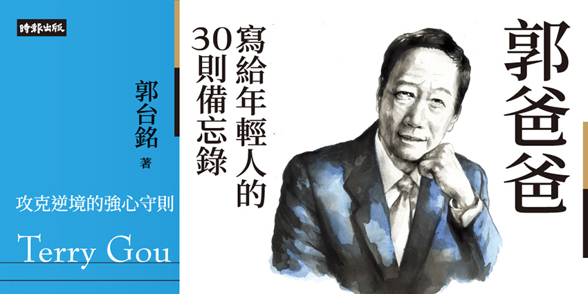

|  |
本書架構：
這本書是僅有173頁，內容有30則備忘錄，我個人讀後感在理解全書上，大部分的沒有必要性的順序之分，意思是你可以想讀哪一章節都隨時可以快速翻閱，每一則大概五百到兩千字，在閱讀上非常輕鬆，而且不像是說教，真的像是長輩的心法分享。
六字訣：『方向』、『時機』、『程度』
這是郭台銘做事情，必定會反覆問自己的六字訣。
『方向』就好像要從台北到高雄，不論是中山高或北二都會到，但是往北上開，而人生不可能無時無刻都有明確的方向，作者建議我們能做的，是至少要先跨出第一步，你就會知道第二步該怎麼走，走到第九十九步時，自然就會知道第一百步要往哪裡。
『時機』，作者非常喜歡歷史，他分析過他最崇拜的軍事政治家之一成吉思汗，是如何能打下俄羅斯，而希特勒跟拿破崙都失敗於，沒辦法戰勝俄羅斯嚴峻的冬天氣候，因為在蒙古的成吉思汗知道夏天要往北打，冬天要往南打，所以作者認為掌握方向還不夠，需要等待時機成熟，不然方向對了但時機不對，也是枉然。
最後『程度』我的理解就是拿捏的分寸，知道做這件事情要做到什麼樣的地步才算成功，請找到做每件事情最適合的程度，比如說運動就是要出汗，吃飯卻只要八分飽，這就是最適合的程度，就是關鍵的六字訣最後一步。
人生沒有順境只有逆境
這是我看了最有感觸的ㄧ篇，作者舉的例子也非常生動，在三十多年前，因為要開拓美國業務，郭爸爸把全家搬到美國去，當時假日若有空可以跟女兒相處，他會帶她女兒去最愛去優勝美地公園，然後去買鳥飼料，然後爬上一個大岩石上餵鳥，然後鳥群們都很開心的圍繞在父女倆的腳邊，無憂無慮的覓食。
然後某一年雪季來的特別快，在感恩節左右就到來，維持了兩個月，雪季終於結束，女兒興奮地拉這爸爸，說迫不期待的要再去餵鳥，沒想到當地的鳥飼料店關了，附近也不再有鳥群，原因是一般來說野生鳥在入冬前，都會本能性地儲備糧食到鳥窩，好度過寒冬，但是習慣被人們餵食的鳥兒，已經習慣舒適的等人餵食，所以根本沒有準備足夠糧食，撐不過寒冬全都死亡了，女兒也應此痛苦不擠的說，以後都不要再餵鳥了，反而害祂們死亡提早到來。
作者認為順境是很可怕的舒適圈，謹惕年輕人即便處於順境，也要好好學習與維持相當程度的工作量，因為心志如過失去砥礪跟鍛鍊，那就會逐漸喪失了自己。
責任心與勤勞
郭董認為有責任心的人，不需要被管理，在他的經營企業的字典裡，沒有管理兩個字，只有責任，他認為有責任心的表現就是不會把，是非成敗歸咎於外在環境或他人身上，只會認為是自己還能不能夠主動積極的多做一點，想辦法的把事情完成，相信命運掌握在自己手裡。
作者認為沒有勤奮就沒有財富，在他壯年的年代，台灣人最可貴的精神就是勤勞，感慨現在的年輕喜歡：『錢多、事少、離家近。』甘願付出勞動，就可以有收穫，是他成功的重要原因，書中有舉例，一位聘請在美國墨西哥裔的員工，便於在他出差美國時，擔任是司機兼秘書，一個禮拜出差結束回台灣後，收到該員工要請一個禮拜的假，理由是因為上週每天開車，而且平均每晚11點才到飯店check in，這樣的工作強度要一個禮拜的休息才能恢復，而郭董週日回台後，下週一照常上班。
品格與信任
品格是品德加上格局的組合詞，沒想到讓郭董列入這項標準的故事，竟然來自他家附近的小吃店，牆上面放著股神巴菲特的格言：『評價一個人時，應重點考察四項特徵：善良、正直、聰明、能幹；如果不具備前兩項，那後面兩項會害了你。』而他認為還要加上格局，格局就是心中要有凌雲壯志，但內心也要虛懷若谷，與人為師。簡單說看事情要看前瞻，也不要自大自滿。
而信任恰恰是，能夠讓自己心如凌雲壯志的方法之一，你對人有多信任，因為你的信任能會讓對方的潛力與使命感，將會被你所激發，而你越想干預與控制，對方認為什麼事都要你說了才算，久而久之就只有等待你為他負責，請充分信任你的家人，團隊，甚至合作夥伴，即便中間出了差錯，一起想辦法度過難關，而不是永遠不信任他人，進而貶低與憤怒。（即便作者說他脾氣不好，都時常強迫自己忍下來了，因為他知道他需要給人信任感）。
終身學習、堅持運動與不要炒房
作者認為在這個爆炸進步的時代，只要一年以上不學習新知，就一定是跟不上時代，再忙也會抽出時間去運動，他最喜歡爬山，沒空也盡量堅持日行萬步。最後是他認為，專注在自己發展的本業，房地產他到四十四歲前都是租的，而在二、三十歲時，有能力買房時，他選擇了購買機器設備，才有現在的鴻海帝國，本書非常好閱讀也不深奧。而且讀完後我再度發現成功的人，真的有其不可重複的機運，但是底層做人做事的哲學與底層邏輯，基本就是誠信，勤奮，堅持，與努力不懈的自律，願你我共勉之。